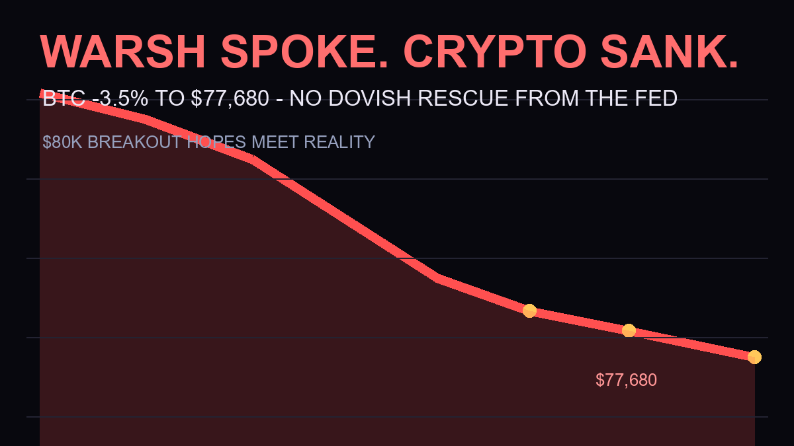

Why Is Crypto Down Today? Warsh’s “No Rescue” Jackson Hole Message, Explained

Three days ago, Bitcoin was celebrating its biggest weekly rally since March 2023. Tonight it’s trading at $77,680, down 3.5% — and the reason is one man’s podium manner in Wyoming. Fed Chair Kevin Warsh’s first Jackson Hole keynote delivered no dovish rescue, and the market’s rate-cut hopes for September just took a direct hit. Here’s exactly what happened and what it means.
The Quick Answer
- Bitcoin: $77,680 (-3.5% in 24h), ETH: $2,440 (-3.4%) — after holding near $80K all week
- The trigger: Warsh’s keynote kept a discipline-first stance — no September rate-cut signal, despite the Fed’s preferred PCE price index running at 3.7% year over year
- The quote that stung: investors should not look “primarily to the Fed” for trade signals (CNBC)
- The irony: and the genuine surprise: despite the “Financial Innovation” theme, the prepared remarks contained zero explicit mentions of stablecoins, tokenization or crypto — his innovation focus was AI capex. The only crypto-adjacent reference in the official transcript is a footnote citing his own 2022 essay, “Money Matters: The US Dollar, Cryptocurrency, and the National Interest”
What Warsh Actually Said
The keynote leaned into the symposium’s “Financial Innovation” theme — stablecoins and tokenized markets got explicit airtime in his framework. But the message underneath was pure Warsh: discipline first, rescue never. He told markets to stop outsourcing their risk decisions to the Fed — and went further: “the Fed’s predominant focus right now should be on prices,” the 2% target is “a firm, fixed target,” and forward guidance “has overstayed its welcome.” He also pledged a “quieter Fed.” MarketWatch noted stock gains faded during the speech itself as yields retreated from their spike — a sign the bond market heard “no help coming” before the equity market did.
The context that made this sting: PCE price index is running at 3.7% year over year (4.1% annualized over the past six months), well above the 2% target, and markets had priced only ~45% odds of a September cut (Fox Business). After the Treasury-buyback-fueled rally that took BTC from $63K to $81K in three weeks, crypto was positioned for a dovish confirmation. Warsh gave the opposite.
Why Crypto Fell Harder Than Stocks
Crypto’s rally this month wasn’t just ETF inflows — it was a liquidity expectations trade. The same forces driving gold to records drove Bitcoin past $80K: the bet that fiscal and monetary policy would stay loose. Warsh’s speech attacked exactly that bet. When the “no rescue” signal hits an asset that rallied 24% in three weeks on rescue hopes, the correction is mechanical — leveraged longs unwind first, and the asset falls harder than traditional markets ever would.
The long-liquidation pattern from Tuesday’s $81,238 top repeated tonight: over-leveraged traders who bought the breakout near $80K got flushed as price lost the level.
What Happens Next: The Levels
Bull case: $76,500 — Tuesday’s flash low — holds as support; a bounce there sets up a retest of $80K once the Warsh shock absorbs. Bear case: losing $76,500 reopens the descent toward $72,000, where the August rally began. The wildcard: September’s FOMC meeting and the next PCE print. Warsh didn’t slam the door on cuts — he just refused to promise one. If inflation cools, the same trade resumes with better justification.
Frequently Asked Questions
Why did Bitcoin fall after the Warsh speech?
Warsh’s first Jackson Hole keynote kept a discipline-first stance with no September rate-cut signal, despite PCE inflation at 3.7%. His message that investors shouldn’t look “primarily to the Fed” punctured the liquidity hopes that drove Bitcoin’s 24% three-week rally — so leveraged longs unwound and BTC fell 3.5% to about $77,680.
Did Warsh say anything about crypto or stablecoins?
Despite the “Financial Innovation” theme, the prepared remarks contained no explicit crypto, stablecoin or tokenization mentions — his innovation focus was AI infrastructure capex and a new productivity task force. The only crypto reference is a transcript footnote citing his 2022 essay calling Bitcoin a “very good policeman for policy.” And there was no policy sweetness: no rescue, no cut signal — in fact rate-hike odds rose.
Will Bitcoin recover from here?
The key level is $76,500 — Tuesday’s flash low. Holding there sets up a retest of $80,000 as the Warsh shock absorbs; losing it opens a move toward $72,000. September’s FOMC and the next PCE inflation print are the next major catalysts.
Is the $80,000 breakout dead?
Not dead — deferred. The breakout happened on genuine drivers (record short squeeze, ETF inflows, Treasury liquidity plans), not just Fed hopes. But without a dovish signal, the next leg up needs either ETF flows to accelerate or inflation to cool. Watch $76,500 this week.
Sources
- Federal Reserve — Warsh keynote transcript (Aug 28)
- CNBC — dollar “on edge,” “not primarily to the Fed” framing
- MarketWatch — stock gains faded during the speech; yields retreated
- Fox Business — inflation, rate path in focus pre-speech
- CoinDesk — BTC near $80K into the speech